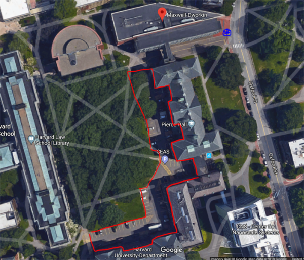

Failure Forum 2019
The Idea
While every EWB chapter is working hard to do the best for their partner communities, mistakes along the way are inevitable. Our chapter earnestly believes that the best way to foster successful projects is to encourage honest dialogue and create spaces in which everyone feels comfortable admitting to failures small and large, and takes the time to learn from those mistakes.
This belief led to the conception of The Failure Forum, which will take place on April 6th, 2019, 10am-7pm followed by an informal chapter social. This student-lead conference is dedicated to the candid discussion of failure in the context of EWB projects and the lessons that can be shared and learned when things go wrong. It aims to encourage student and professional engineers to speak up about a reality that sometimes seems taboo in the engineering service world.
Logistics
Who: YOU!
What: A failure-themed EWB conference hosted by the Harvard student chapter
Where: Harvard University's Maxwell-Dworkin Building, 33 Oxford Street, Cambridge, MA 02138
When: Saturday, April 6th, 2019, 10am-7pm.
Why: To promote a culture where it's acceptable to talk about and learn from failure
Questions? Email harvardcollege@chapters-ewb-usa.org
Registration
Register here!
Early Bird Tickets (until March 15th)
Individual: $10 / Chapter pass: $50
Regular Tickets - first round (March 15th - April 1st)
Individual: $20 / Chapter pass: $80
Regular Tickets - second round (April 1st - April 6th)
Individual: $25 / Chapter pass: $100
Food
Lunch will be provided. Pizza dinner will be served at the chapter social at the conclusion of the conference. Light refreshments will be served throughout the day.
Parking
Parking: There are reservable parking spaces (near Maxwell Dworkin Building, 33 Oxford St, Cambridge, MA 02138) in the SEAS parking lot between Pierce Hall and the Harvard Law School Library, as shown below in red. This parking lot can only be accessed from Oxford Street; the entrance is marked by the blue star. You can purchase parking permits here for $9/day. The necessary department is the “School of Engineering and Applied Science” and the code to purchase a parking permit is: 2006.
 If parking runs out, please go to the Northwest Building, located just across the street. There is parking in the basement, with the same permit system as above.
Schedule
Building Codes: MD = Maxwell-Dworkin, NW = Northwest Science Building| Time | Activity | Title | Speakers | Room |
|---|---|---|---|---|
| 9:15-10 AM | Registration | MD Lobby | ||
| 10-10:30 AM | Welcome Panel | Intro to the Failure Forum | Bree Carlson, Chris Lombardo, Eva Cai, Jude Najjar | MD G115 |
| 10:30-11:25 AM | Intro Speaker | When and Why is Failure Good News | Amy C. Edmondson | MD G115 |
| 11:30 AM -12:20 PM | Session 1 | Panel Discussion: Intentional Trip Planning to Minimize The Chance of Failure | May ElKhattab, Tom Rebbecchi, Peter Botticello | MD G115 |
| Helping Students Fail (and Learn): Best Management Practices for Mentors | Bree Carlson, Chris Lombardo, Dave Sacco | MD G125 | ||
| 12:20-1:10 PM | Lunch | MD Lobby | ||
| 1:10-2:10 PM | Session 2 | Things not to do as a Project Lead | Alejandro Gracia-Zhang, Santiago Vargas | MD 123 |
| Right Wells and Wrong Wells - say that 3 times fast | Nadia Glucksberg, Helena Hollauer | MD G125 | ||
| The Oops and Downs of ICP Reviews, or, Waiting for Approval | Dave Sacco | MD 221 | ||
| Failure Prevention in the Project Selection Process: Lessons Learned from Ecuador | Karen Brzotowski | Jen Hamvas | MD G115 | Fail Mindfully | Dave Hawk | MD 119 |
| 2:10-2:15 PM | Break | |||
| 2:15-3:30 PM | Session 3 | Panel Discussion: Failure in the Working World | Sarah McGillicuddy, Nicole Abi-Esber, Bill VanSchalkwyk | MD G115 |
| Good Notes Lead to Good Projects: An Activity for Student Chapters | Bree Carlson | MD 119 | ||
| Fundraising Roundtable Discussion | May ElKhattab, Patrick Brennan, Tyler Moulton | MD G125 | ||
| 3:30-3:40 PM | Break | |||
| 3:40-4:30 PM | Session 4 | Befriending Your Community: It's More Than A Partnership | Nicole Trenchard, Daniel Getega | MD G125 |
| Technically, it worked: How social engagement failure led to a dysfunctional water distribution system in Pueblo Nuevo, Honduras | Sage Herrick | MD 221 | ||
| Succeeding for Whom? | Ivy and Seth Leavitt-Carlson | MD 119 | ||
| Lessons Learned from 12 Years of Water Supply Projects in Kenya | John Tobiason | MD G115 | ||
| 4:30-4:40 PM | Break | |||
| 4:40-5:30 PM | Session 5 | Integrating Lessons: Past, Present, and Future | David Kurtz, Kayla Kurtz | MD 221 |
| Managing Chaotic Leadership Transitions | Nisheet Reddy, Carson Hess | MD G115 | ||
| Quick Feet for Great Feats: Taking Action When Things Don't Go As Planned | Vibha Agrawal | MD G125 | ||
| Avoidable vs. unavoidable failure…. It matters. | John C. Warner | MD 119 | ||
| 5:30-5:35 PM | Break | |||
| 5:35-6:15 PM | Conclusion | Bree Carlson, Eva Cai, Jude Najjar | MD G115 | |
| 6:10pm onwards | Pizza Dinner | Chapter Social | MD Lobby |
Sponsors
We would like to give a huge thank you to our sponsors. This conference would not be possible without them.